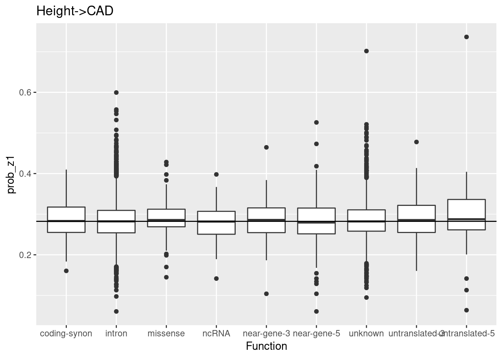

tidyversebiomaRtfrom Bioconductor (don’t actually load it using library because it overrides dplyr’s select etc.)dbplyr & RMariaDB (for connecting to UCSC genome browser)DTReactomePA from Bioconductor for pathway enrichment (may have to sudo apt-get install libudunits2-dev)clusterProfiler for GO and reactome pathway enrichmentorg.Hs.eg.dbBriefly, the workflow is:
biomaRt
We’ll summarise the evidence for each gene by its max \(P(Z_i=1)\)
Let’s start with the full set of HDL->CAD genes and check for GO term enrichment (among the GO-MF terms) using a 0.05 p value cutoff and Benjamini-Hochberg p-value adjustment.
Now let’s restrict ourselves to genes where the max(prob_z1 is greater than 0.5)
Again, starting with the full set of genes:
Restricting to genes where the max(prob_z1 is greater than 0.5)
Restricting to genes where the min(prob_z1) is greater than 0.5 gives us 1 result
This R Markdown site was created with workflowr